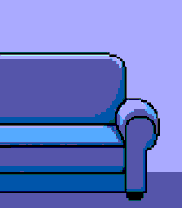

PEBBLE TIME 2 · CLICKABLE PROTOTYPE
Find My iPhone
Проверьте часы, вход в Apple Account, 2FA и выбор устройства до сборки приложения.
PEBBLE



FIND MY IPHONE
Kirill’s iPhone
HOLD SELECT
Зажмите среднюю кнопку на 0,65 секунды. Короткое нажатие отменяется.
Find My iPhonePebble companion settings
ШАГ 1 ИЗ 3
Подключить Apple Account
Данные отправляются напрямую Apple. Пароль используется только для входа и не сохраняется.
Хранится: токены сессии, trust token, cookies, ID выбранного устройства.
Не хранится: пароль и код 2FA.
Не хранится: пароль и код 2FA.
ШАГ 2 ИЗ 3
Введите код проверки
Apple отправила шестизначный код на доверенные устройства.
ШАГ 3 ИЗ 3
Какой iPhone звонит?
На часах можно переключаться между доступными iPhone кнопками Up и Down.
✓
Готово к поиску
Kirill’s iPhone выбран. Откройте приложение на Pebble и удерживайте Select.
Сессия AppleАктивнаПарольНе сохранёнПоследняя проверкаТолько что